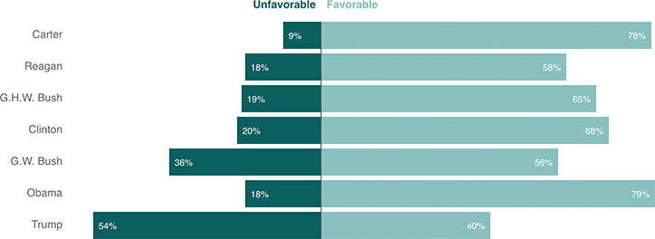

Trump Has Lowest Favorability For Any Incoming President Since At Least Pres. Carter
Only about 4 in 10 Americans view Donald Trump favorably, according to a new ABC News/Washington Post poll. That’s more than 16 percentage points worse than even President George W. Bush’s inauguration after a contentious election and recount.
